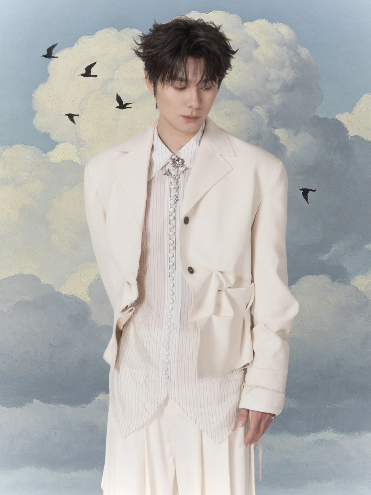
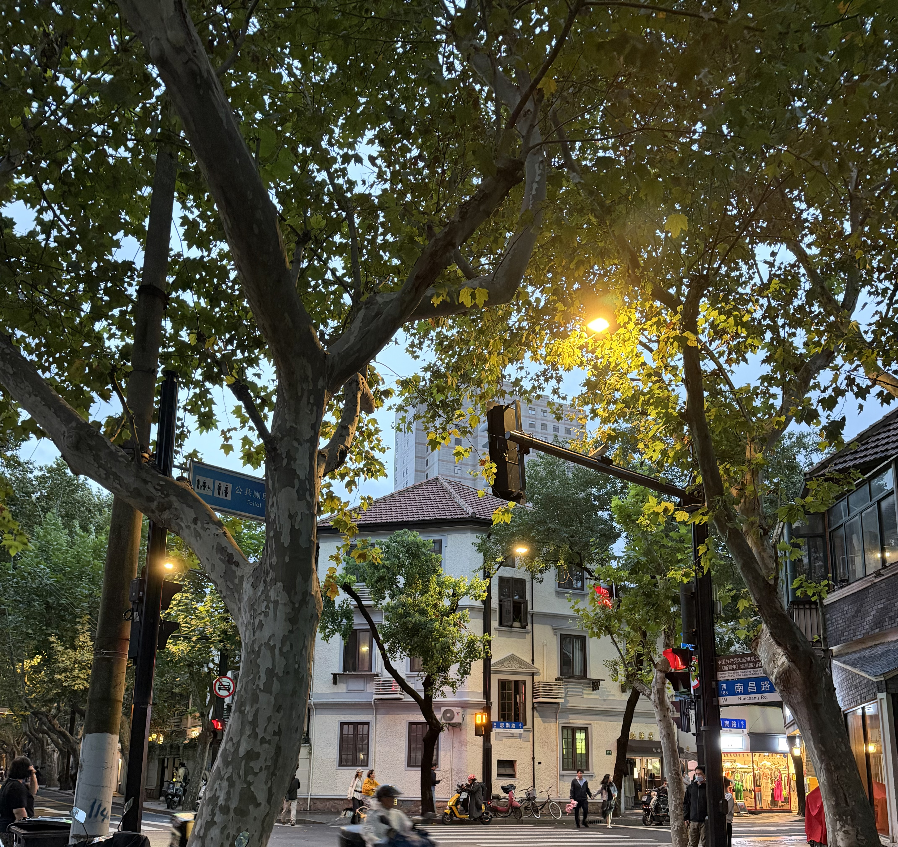
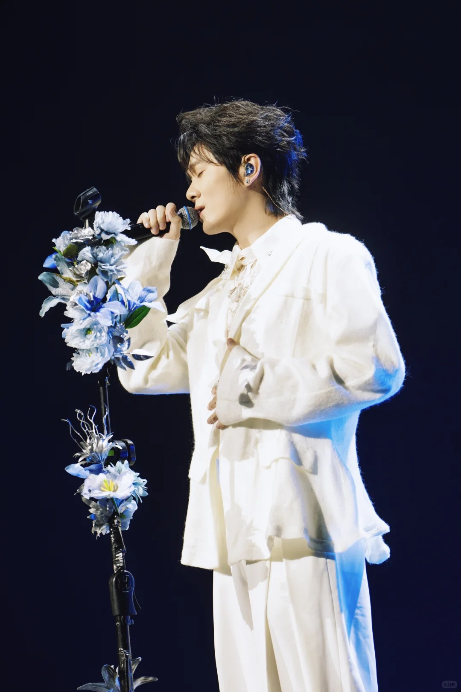

PROJECT / 01
Project 01.
金融新闻学习系统
将新闻事件整理为证据、概念、市场影响与学习提示，帮助学习者理解信息之间的联系。
- ROLE / TYPE
- 项目发起、产品需求设计、AI 辅助开发协作、阶段验收与迭代推进。
- YEAR
- 2026
- STACK
- Codex、Docker Desktop、Windows PowerShell/Python、DeepSeek API、OpenAI 兼容接口、LLM Provider 抽象
我是余沛玲，一名数据科学与大数据技术的大一学生。
喜欢探索算法与人工智能背后的逻辑，也喜欢用摄影、音乐和文字收藏生活里的细微情绪。对我而言，理性与感性从来不是对立面——代码让我理解世界如何运转，而艺术让我感受世界为何动人。
我喜欢 R&B 、爵士乐，喜欢黄昏的天空、偶然遇见的花束，也喜欢把天马行空的想法慢慢变成可以触碰的作品。
始终保持好奇，认真思考，也认真生活。希望在不断探索世界的同时，找到属于自己的表达方式。

R&B · 裘德/方大同
AI算法与大模型

上海
阅读、vibe coding、city walk
PROJECT / 01
金融新闻学习系统
将新闻事件整理为证据、概念、市场影响与学习提示，帮助学习者理解信息之间的联系。

PROJECT / 02
智能体构建与验证流程
探索从任务规划、草稿生成到验证门槛的智能体构建流程，让实现状态与验证证据可以被清楚追踪。
封面为网络例图，详情页已预留填写位置。

ordinary moments, kept close.
R&B